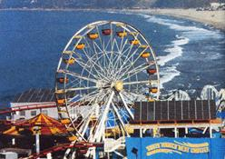

BITS AND PIECES
Some thousand people get off the ferris wheel at the Santa Monica Pier every day and see this sign: "You have just ridden the world's first solar ferris wheel."
Dedicated in October, the ferris wheel is one of the first projects in Santa Monica's new Solar Neighborhood Program-an agreement between the city of Santa Monica and local power provider, Edison Technology Solutions-to form the first largely solar city in the U.S. By the light of day, the wheel's 660-photovoltaic modules generate about 200-kilowatt hours of energy; by night, the wheel goes back on the power grid.
"People still see solar energy as something that didn't work out in the seventies," says Steve Taylor, manager of Edison Technology Solutions' Renewable Energy Program. "We're trying to make solar power a household word and show people that it really works."
According to Taylor, there is no difference in the ride's feel, and the public's response has been extremely positive. The city's next important, albeit less entertaining, solar project will be a 30-kilowatt carport structure at the Santa Monica Civic Center.
-Jasmine Fox
|
 |
|
|